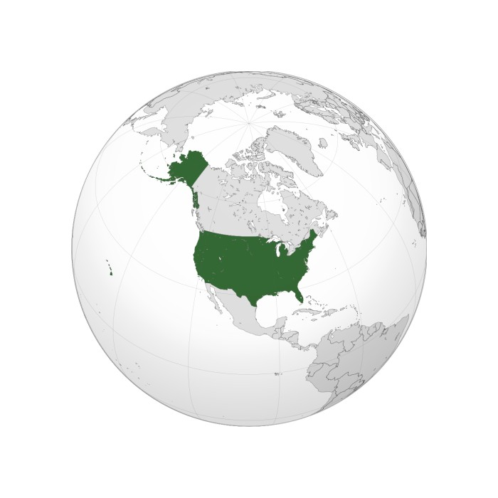
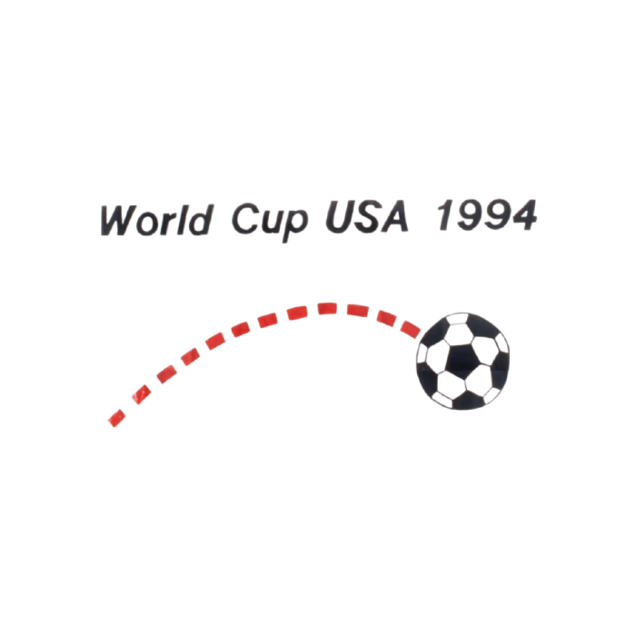

United States Flag
Three nations bid to host the event: United States, Brazil, and Morocco. The vote was held in Zurich on July 4, 1988 (Independence Day in the United States), and only took one round with the United States bid receiving a little over half of the votes by the FIFA Executive Committee members. FIFA hoped that by staging the world's most prestigious tournament there, it would lead to a growth of interest in the sport.

United States Location
An inspection committee also found that the proposed Brazilian stadiums were deficient, while the Moroccan bid relied on the construction of nine new stadiums. Conversely, all the proposed stadiums in the United States were already built and fully functioning; U.S. Soccer spent $500 million preparing and organizing the tournament, far less than the billions other countries previously had spent and subsequently would spend on preparing for this tournament. The U.S. bid was seen as the favorite and was prepared in response to losing the right to be the replacement host for the 1986 tournament following Colombia's withdrawal.

Bid Logo
One condition FIFA imposed was the creation of a professional soccer league – Major League Soccer was founded in 1993 and began operating in 1996. There was some initial controversy about awarding the World Cup to a country where soccer was not a nationally popular sport, and at the time, in 1988, the U.S. no longer had a professional league; the North American Soccer League, established in 1967, had folded in 1984 after attendance faded. The success of the 1984 Summer Olympics in Los Angeles, particularly the soccer tournament that drew 1.4 million spectators throughout the event, also contributed to FIFA's decision.